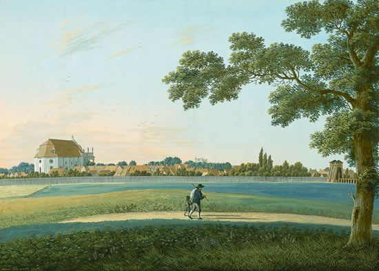

[Reading] Gulliver’s Travels, Jonathan Swift
I was first introduced to Jonathan Swift via the Conversations with Tyler podcast where he interviews an AI version of Jonathan Swift, who actually died in 1745. After appreciating the idea to bring him back to life, I figured I’d go read a bit of his work to see if I could form an opinion on how close I felt that Jonathan GPT Swift was to the actual Jonathan Swift.
As much as I’d love to say that I could find the connection, that was indeed not the case, and as as result, I’ve added more Jonathan Swift books to my reading list — potentially, some day, I’ll be able to connect the dots between my perception of Jonathan Swift (through his writing) and Jonathan GPT Swift (in his podcast).
Back to Gulliver’s Travels; a few brief notes…
- I don’t typically describe books as “fun”, however, I would here. It could be simply because of the ridiculous names like Brobdingnag, Glubbdubdrib and Houyhnhnms. Is there any etymology somewhere out there?
- Although I felt like a lost a grasp of the fictional world somewhere towards the end of Part III, I was still engaged in the adventures. I probably only captured 70% of the essence, but I even that is satisfactory (for now). In order to grasp 100%, I’ll have to read much more Swift and much more history.
- My favorite aspects of the book are the short summaries of the chapters before the chapter. For example, the book would read,
*“The Author, being informed of a design to accuse him of high treason, makes his escape to Blefuscu - His reception there”
,* which is exactly what happens in the chapter that follows. It seems Swift has provided the reader spoiler alerts throughout, which I believe emphasizes the story writing, rather than the plot itself. Also, a fair lesson on brevity.
In case you’re interesting in watching the full length 1939 movie rendition of the book, I’ve linked it below!